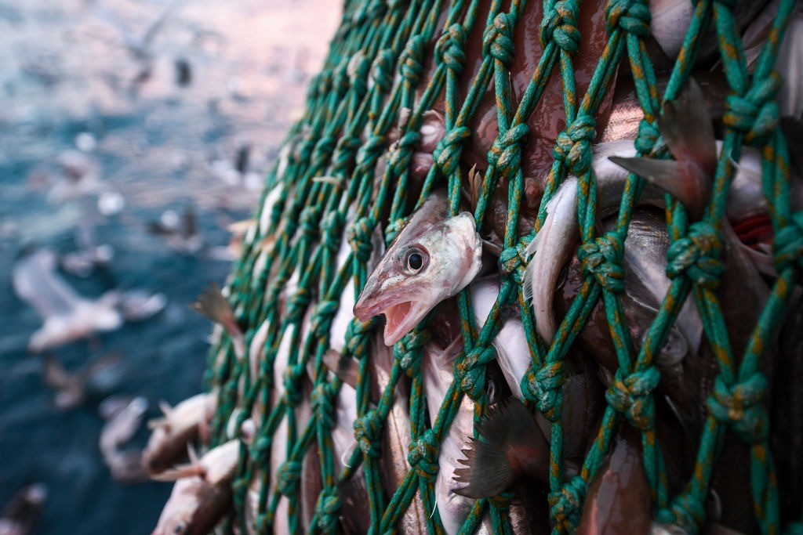
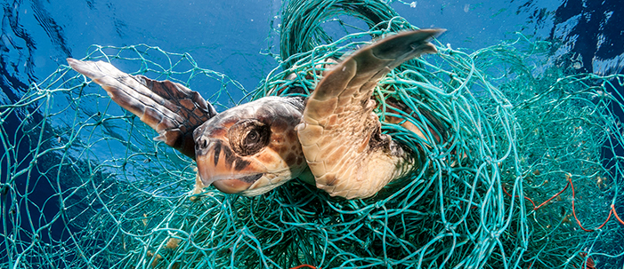

Biodiversidade Marinha
Diferentes espécies marinhas, ecossistema e sua independência.
Os oceanos do nosso planeta são lar de uma imensa variedade de formas de vida, cada uma desempenhando um papel crucial na complexa teia de vida marinha. Desde os microorganismos invisíveis a olho nu até os majestosos gigantes dos mares, a biodiversidade marinha é um testemunho da riqueza e complexidade dos ecossistemas oceânicos. Esses ambientes são habitados por uma gama impressionante de organismos, que vão desde simples fitoplânctons e zooplânctons até os grandes mamíferos como baleias e golfinhos. Cada um desses grupos contribui de maneira única para a saúde e o equilíbrio dos oceanos, e entender essa diversidade é fundamental para apreciarmos a importância da vida marinha e os desafios que ela enfrenta. Nesta seção, exploraremos a variedade de espécies marinhas e como elas interagem para sustentar os ecossistemas oceânicos que são vitais para a vida na Terra.
Microorganismos Marinhos
Fitoplâncton:
Pequenos organismos fotossintetizantes que formam a base da cadeia alimentar marinha. Exemplos incluem as diatomáceas e as dinoflageladas.
Zooplâncton:
Organismos microscópicos que se alimentam de fitoplâncton e são uma importante fonte de alimento para muitos animais marinhos. Incluem pequenos crustáceos, como o krill, e larvas de diversos animais marinhos.
Bactérias e Arqueias:
Microorganismos que desempenham papéis vitais na decomposição e no ciclo de nutrientes nos oceanos. Elas ajudam na ciclagem de nutrientes e na digestão de matéria orgânica.
Invertebrados Marinhos
Cnidários:
Incluem medusas, anêmonas do mar e corais. Os corais formam recifes que são habitats ricos para muitas outras espécies marinhas.
Moluscos:
Diversos grupos como caramujos, mexilhões, ostras e polvos. Os polvos, por exemplo, são conhecidos por sua inteligência e habilidades de camuflagem.
Crustáceos:
Incluem camarões, caranguejos e lagostas. Estes são importantes tanto ecologicamente quanto economicamente.
Equinodermos:
Estrelas-do-mar, ouriços-do-mar e pepinos-do-mar são exemplos que desempenham papéis importantes na estrutura dos habitats marinhos e na ciclagem de nutrientes.
Peixes
Peixes Ósseos:
A maioria dos peixes marinhos, como atuns, salmões e peixes-lua, tem esqueletos ósseos e são encontrados em uma vasta gama de habitats marinhos.
Peixes Cartilaginosos:
Incluem tubarões, raias e quimeras, que possuem esqueletos de cartilagem em vez de ossos. São conhecidos por sua adaptabilidade e eficiência predatória.
Mamíferos Marinhos
Cetáceos:
Incluem baleias, golfinhos e botos. Estes animais são conhecidos por sua inteligência e complexidade social. As baleias-azuis são os maiores animais vivos, enquanto os golfinhos são conhecidos por suas habilidades de comunicação e comportamento social.
Pinípedes:
Focas, leões-marinhos e morsas. Esses animais são adaptados tanto para a vida aquática quanto para a terrestre, passando tempo em terra para descansar e criar seus filhotes.
Sirênios:
Manatins e dugongos, conhecidos por sua dieta herbívora e por frequentarem águas rasas costeiras e estuários.
Reptéis Marinhos
Tartarugas Marinhas:
Espécies como a tartaruga-cabeçuda e a tartaruga-de-pente. Elas fazem migrações longas e têm um papel crucial em seus ecossistemas, como o controle de algas marinhas.
Em conclusão, a biodiversidade marinha é crucial para a saúde e equilíbrio dos oceanos. A variedade de vida marinha sustenta ecossistemas vitais e influencia o clima global. Proteger essa diversidade é essencial para garantir a sustentabilidade dos oceanos e o bem-estar das futuras gerações. Devemos continuar a adotar práticas que preservem essa riqueza natural.
Ameaça aos Oceanos
Perigos que a vida marinha enfrenta
Os oceanos enfrentam sérias ameaças que impactam tanto a biodiversidade marinha quanto a humanidade. Entre os principais problemas estão a poluição, as mudanças climáticas, a sobrepesca e a destruição de habitats.
Sobrepesca
A sobrepesca está esgotando as populações de peixes e impactando a segurança alimentar global. Estima-se que 33% das reservas pesqueiras estão sobreexploradas ou esgotadas. Espécies como o atum e o bacalhau estão em declínio, afetando a cadeia alimentar marinha e a economia das comunidades pesqueiras que dependem desses recursos. A pesca de arrasto destrói habitats submarinos, como os recifes de corais, que são cruciais para a biodiversidade e proteção costeira.
Poluição dos Oceanos

A poluição marinha é um problema crescente. Aproximadamente 8 milhões de toneladas de plástico são despejadas nos oceanos a cada ano, prejudicando a vida marinha e contaminando os ecossistemas. Animais como tartarugas marinhas e aves marinhas estão frequentemente encontrados com plásticos em seus sistemas digestivos, o que pode causar mortes e problemas de saúde graves. A poluição química também afeta a cadeia alimentar, com substâncias tóxicas acumulando-se em peixes que são consumidos por humanos.
Mudanças Climáticas

O aquecimento global está elevando as temperaturas oceânicas, com um aumento médio de 0,3°C nas últimas décadas. Isso afeta corais, que são extremamente sensíveis às mudanças de temperatura. A Branca de Coral, um fenômeno causado pelo estresse térmico, está matando corais ao redor do mundo e ameaçando ecossistemas inteiros. Além disso, a acidificação dos oceanos, resultado do aumento de CO₂, está enfraquecendo as conchas de moluscos e corais, comprometendo suas estruturas e habitats.
Destruição de Habitats
A destruição de habitats marinhos está em alta, com cerca de 50% dos recifes de corais já mortos ou em risco de colapso. Os manguezais e pradarias marinhas também estão sendo degradados devido à construção costeira e poluição. Esses habitats são essenciais para a proteção das costas contra erosão e tempestades, além de servirem como berçários para muitas espécies de peixes.
As ameaças aos oceanos têm impactos diretos sobre a vida marinha e, consequentemente, sobre a humanidade. A poluição, as mudanças climáticas, a sobrepesca e a destruição de habitats estão prejudicando espécies essenciais para a saúde dos ecossistemas e a segurança alimentar global. Proteger os oceanos é vital para garantir um futuro sustentável tanto para a vida marinha quanto para as comunidades que dependem dos recursos oceânicos.
Importância da Vida Marinha
Preservar a vida marinha é crucial para a saúde dos oceanos e para o equilíbrio global. Os oceanos cobrem cerca de 71% da superfície terrestre e abrigam uma imensa variedade de organismos, desde os menores plânctons até os maiores mamíferos marinhos. Cada um desses seres desempenha um papel vital nos ecossistemas marinhos e, por conseguinte, no equilíbrio climático e na segurança alimentar mundial. Habitat para milhares de espécies e fundamentais na regulação do clima (absorvem mais de 90% do excesso de calor gerado pela atividade humana), os oceanos estão sob constante ameaça, com níveis e temperaturas subindo a taxas alarmantes, o que torna essencial a adoção de medidas para sua proteção.
Saúde dos Oceanos
Regulação Climática:
Os oceanos são responsáveis por absorver aproximadamente 30% do CO₂ emitido pela atividade humana, desempenhando um papel crucial na modulação do clima global. O fitoplâncton, embora represente menos de 1% da biomassa oceânica, realiza cerca de 50% da fotossíntese global, produzindo oxigênio e absorvendo CO₂.
Recifes de Corais:
Recifes de corais cobrem cerca de 0,1% da área oceânica e são essenciais para a biodiversidade marinha, abrigando aproximadamente 25% das espécies marinhas conhecidas. Esses recifes também atuam como barreiras naturais, protegendo as costas contra a erosão e danos causados por tempestades. A destruição dos recifes de corais já resultou na perda de cerca de 50% de sua cobertura global.
Ciclos Biogeoquímicos:
Os oceanos são fundamentais na regulação dos ciclos do carbono, nitrogênio e fósforo. O fitoplâncton, por exemplo, contribui para o ciclo do carbono, enquanto organismos marinhos ajudam a reciclar nutrientes essenciais para a saúde dos ecossistemas.
Segurança Alimentar
Dependência Global:
Mais de 3 bilhões de pessoas dependem dos oceanos para obter a maior parte de sua proteína animal. A pesca comercial emprega cerca de 40 milhões de pessoas diretamente e outras 200 milhões indiretamente. No entanto, cerca de 34% das populações de peixes são sobreexplotadas, esgotadas ou recuperando-se de exploração excessiva.
Nutrição e Economia:
Os frutos do mar são fontes ricas de proteínas, ácidos graxos essenciais, vitaminas e minerais, desempenhando um papel crucial na nutrição e na saúde das populações costeiras e em desenvolvimento. A pesca sustentável e a aquicultura são essenciais para manter a segurança alimentar global.
Equilíbrio do Planeta
Movimentação de Nutrientes:
A movimentação das correntes oceânicas, influenciada pela presença de diversos organismos marinhos, contribui para a redistribuição de calor e nutrientes, afetando os padrões climáticos e a produtividade dos ecossistemas.
Proteção da Biodiversidade:
Ecossistemas como as florestas de algas marinhas, que cobrem cerca de 30 milhões de quilômetros quadrados, oferecem habitat e abrigo para muitas espécies, contribuindo para a saúde geral dos oceanos e a biodiversidade global.
Benefícios Econômicos e Sociais
Turismo e Recreação:
Os ecossistemas marinhos, como recifes de corais e praias, são destinos turísticos populares, contribuindo significativamente para as economias locais e nacionais. O turismo costeiro representa uma fonte vital de receita para muitas comunidades ao redor do mundo.
Cultura e Tradição:
Muitas comunidades costeiras têm uma forte conexão cultural e tradicional com o mar, incluindo práticas de pesca, rituais e a importância cultural dos recursos marinhos.
Ameaças e Necessidade de Ação
Poluição por Plásticos:
Estima-se que mais de 8 milhões de toneladas de plásticos são despejadas nos oceanos anualmente, afetando a fauna marinha e entrando na cadeia alimentar humana. A poluição por microplásticos também representa uma ameaça crescente para a saúde marinha e humana.
Acidificação dos Oceanos:
A acidificação dos oceanos, causada pelo aumento dos níveis de CO₂, está enfraquecendo corais e conchas de organismos marinhos. Estima-se que a acidez dos oceanos tenha aumentado cerca de 30% desde o início da Revolução Industrial.
Sobrepesca e Destruição de Hábitos:
A sobrepesca está ameaçando a sustentabilidade de muitas populações de peixes e a destruição de habitats, como manguezais e pradarias marinhas, está comprometendo os ecossistemas que são vitais para a vida marinha e a proteção costeira.
Impacto na Saúde Humana
Benefícios para a Saúde:
Os frutos do mar são ricos em nutrientes, incluindo ácidos graxos ômega-3, que são essenciais para a saúde cardiovascular, desenvolvimento cerebral e função cognitiva. Estudos também mostram que o consumo regular de frutos do mar pode ajudar a reduzir o risco de doenças crônicas, como diabetes e hipertensão.
Riscos de Contaminação:
A poluição marinha e a bioacumulação de toxinas, como mercúrio e PCB (bifenilos policlorados), podem comprometer a segurança alimentar e a saúde humana. É crucial monitorar e regulamentar a qualidade dos frutos do mar para proteger a saúde pública.
Pesquisa Científica e Medicamentos
Descobertas Biomédicas:
A vida marinha oferece uma vasta gama de compostos bioativos que têm potencial para o desenvolvimento de novos medicamentos. Por exemplo, a esponja marinha tem sido fonte de compostos usados no tratamento de câncer e doenças infecciosas.
Estudos Ecológicos:
O estudo dos ecossistemas marinhos e das espécies que neles habitam proporciona insights valiosos sobre a evolução, a biologia e a ecologia, ajudando a desenvolver estratégias de conservação e gestão dos recursos marinhos.
Em conclusão, a vida marinha é indispensável para a saúde dos nossos oceanos e para o equilíbrio ecológico global. Os ecossistemas marinhos desempenham papéis cruciais, como a regulação do clima e a manutenção da biodiversidade, além de oferecer recursos essenciais para a humanidade, incluindo alimentos e oportunidades econômicas. Proteger esses ambientes é vital para garantir a sustentabilidade e a resiliência dos oceanos. Através de esforços conjuntos para combater a poluição e a sobrepesca, podemos assegurar que a vida marinha continue a prosperar e a oferecer benefícios para as futuras gerações. Portanto, a conservação da vida marinha deve ser uma prioridade global, refletindo nosso compromisso com um planeta saudável e equilibrado.
Como ajudar
Conservação e Sustenbalidade
A preservação dos oceanos é um tema cada vez mais urgente. Com a crescente degradação dos ecossistemas marinhos causada por atividades humanas, como a poluição, a sobrepesca e a destruição de habitats, torna-se essencial adotar práticas que garantam a saúde e a biodiversidade das águas. Os oceanos são vitais para o equilíbrio climático e para a sobrevivência de inúmeras espécies, incluindo a nossa. No entanto, para garantir sua proteção, é necessário um esforço conjunto que envolva governos, empresas e indivíduos. Abaixo, você encontrará diversas formas práticas e acessíveis de contribuir para a conservação da vida marinha.
A seguir, alguns passos simples que você pode seguir para ajudar na conservação dos mares e na proteção das espécies marinhas.
1.Jogue máscaras, lenços e luvas no lixo
Bilhões de máscaras e luvas estão sendo produzidas e usadas durante a pandemia. Esses itens devem ser descartados em uma lixeira apropriada, e não no chão ou nas praias.
2.Não jogue bitucas de cigarro no chão
Cerca de 4,3 bilhões de bitucas de cigarro são jogadas no chão todos os anos e 40% delas acabam nos oceanos. Contendo mais de 100 substâncias prejudiciais, elas contaminam o solo e vias aquáticas.
3.Seja consciente quando for às compras
Roupas contendo fibras sintéticas e algumas pastas de dente, cosméticos, xampus e outros produtos contêm microplásticos, uma das maiores ameaças à vida marinha. Ao não comprar esses itens, você ajuda a reduzir a quantidade despejada no mar.
4.Cuide das praias
Quando estiver saindo da praia, deixe o espaço limpo. Desfrute dos oceanos sem interferir na vida selvagem, remover pedras ou arrancar corais.
5.Redução do Uso de Plásticos
Os plásticos são um dos principais poluentes dos oceanos e representam um risco mortal para a vida marinha.
Evitar plásticos descartáveis: Substitua itens como sacolas, garrafas e canudos por alternativas reutilizáveis.
Reciclagem adequada: Reciclar plásticos e outros materiais reduz o desperdício que pode acabar nos mares.
Participar de mutirões de limpeza: Limpar praias e rios ajuda a remover plásticos que poderiam entrar no oceano.
6.Conscientização e Educação Ambiental
Educar as pessoas sobre a importância dos oceanos é essencial para promover mudanças significativas.
Campanhas de conscientização: Promova eventos e palestras que discutam a conservação dos oceanos.
Educação nas escolas: Ensinar crianças desde cedo sobre a importância da vida marinha cria uma geração mais consciente.
Divulgação nas redes sociais: Use plataformas online para compartilhar informações e notícias sobre a preservação dos mares.
7.Pesca Sustentável
A prática da pesca descontrolada coloca em risco diversas espécies marinhas e seus habitats.
Escolher frutos do mar sustentáveis: Prefira comprar peixes de fontes certificadas e que garantem práticas responsáveis.
Apoiar a pesca artesanal: Incentive pescadores locais que utilizam métodos mais ecológicos e seletivos.
8.Redução das Emissões de Carbono
O aumento do CO2 contribui para a acidificação dos oceanos, prejudicando várias espécies.
Usar menos combustíveis fósseis: Opte por meios de transporte mais sustentáveis, como bicicletas ou transporte público.
Apoiar energias renováveis: Incentive o uso de fontes de energia limpas, como a solar e a eólica.
Plantar árvores: Árvores ajudam a capturar CO2 da atmosfera, reduzindo o impacto da acidificação dos oceanos.
9.Apoio a Iniciativas e ONGs de Preservação Marinha
ONGs desempenham um papel essencial na conservação e recuperação dos oceanos.
Doar para ONGs ambientais se possível: Contribuir financeiramente para essas organizações ajuda a manter projetos de preservação.
Voluntariar-se: Participe de projetos que visam proteger a vida marinha, como a recuperação de recifes e o monitoramento de espécies ameaçadas.
Assinar petições: Pressione governantes e empresas a adotarem políticas e práticas mais sustentáveis.
10.Controle da Poluição Química
Produtos químicos despejados nos oceanos prejudicam gravemente a saúde da vida marinha.
Evitar o uso de pesticidas e fertilizantes químicos: Prefira produtos mais ecológicos para reduzir o impacto nas águas.
Descarte correto de produtos químicos: Nunca jogue resíduos químicos na pia ou no esgoto, pois podem acabar nos oceanos.
Apoiar políticas de controle de poluição: Defenda leis que limitem a liberação de poluentes industriais nos rios e mares.
11.Redução do Desperdício de Água
Economizar água em terra ajuda a evitar o escoamento de poluentes para os oceanos.
Economizar água em casa: Pequenas ações como banhos curtos e fechar a torneira ao escovar os dentes podem fazer a diferença.
Uso sustentável da água na agricultura: Apoie técnicas agrícolas que utilizem menos água e evitem o escoamento de produtos químicos.
A proteção dos ecossistemas marinhos é uma tarefa contínua e que exige o comprometimento de todos. Ações individuais, como reduzir o uso de plásticos, economizar água e apoiar práticas sustentáveis, podem ter um impacto significativo na saúde dos oceanos. Da mesma forma, apoiar iniciativas maiores, como a criação de Áreas Marinhas Protegidas e a educação ambiental, também contribui para o equilíbrio ecológico marinho. Quanto mais pessoas se envolverem na causa, maiores serão as chances de preservar os oceanos para as gerações futuras. O oceano é vital para a vida na Terra, e cada esforço conta para sua conservação.